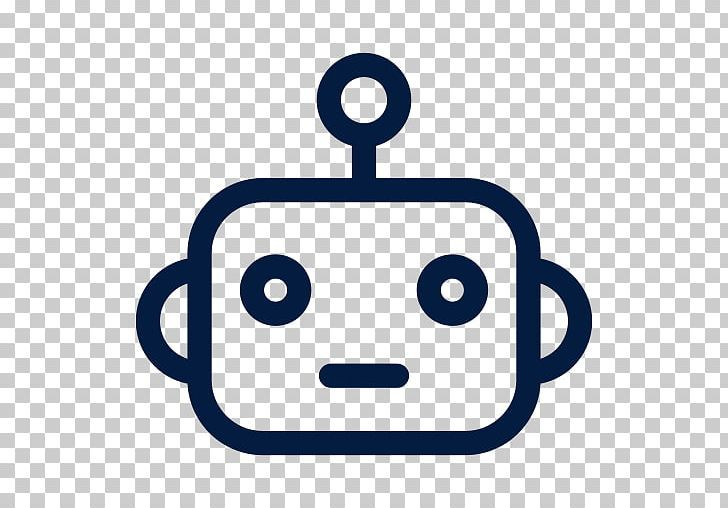

Automate
Desativado
Iniciar Automação
Parar Automação
Configurações
Intervalo de atualização (ms):
Intervalo mínimo entre atualizações da fila. Menor = mais rápido, maior = menos carga no Info2B.
Tempo limite de validação (ms):
Espera máxima pelo status e pelos botões antes de abortar o pedido.
Exigir status definido
Bloqueia pedidos cujo status atual esteja "Não informado".
Salvar Configurações
Progresso da fila
Estado:
—
Intervalo em uso:
—
Cadência medida:
—
Último código:
—
Transformados:
0
Bloqueados:
0
Zerar progresso da fila